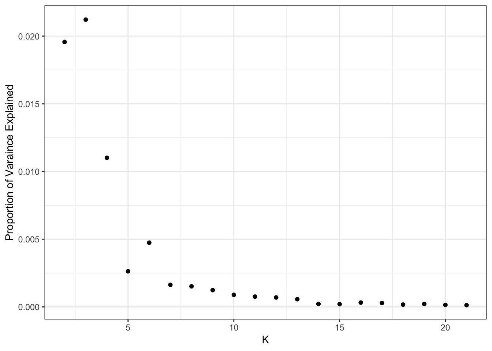

Human Origins Array Global Results
jhmarcus
2019-02-15
Last updated: 2019-02-24
workflowr checks: (Click a bullet for more information)-
✔ R Markdown file: up-to-date
Great! Since the R Markdown file has been committed to the Git repository, you know the exact version of the code that produced these results.
-
✔ Environment: empty
Great job! The global environment was empty. Objects defined in the global environment can affect the analysis in your R Markdown file in unknown ways. For reproduciblity it’s best to always run the code in an empty environment.
-
✔ Seed:
set.seed(20190211)The command
set.seed(20190211)was run prior to running the code in the R Markdown file. Setting a seed ensures that any results that rely on randomness, e.g. subsampling or permutations, are reproducible. -
✔ Session information: recorded
Great job! Recording the operating system, R version, and package versions is critical for reproducibility.
-
Great! You are using Git for version control. Tracking code development and connecting the code version to the results is critical for reproducibility. The version displayed above was the version of the Git repository at the time these results were generated.✔ Repository version: 63e7173
Note that you need to be careful to ensure that all relevant files for the analysis have been committed to Git prior to generating the results (you can usewflow_publishorwflow_git_commit). workflowr only checks the R Markdown file, but you know if there are other scripts or data files that it depends on. Below is the status of the Git repository when the results were generated:
Note that any generated files, e.g. HTML, png, CSS, etc., are not included in this status report because it is ok for generated content to have uncommitted changes.Ignored files: Ignored: .Rhistory Ignored: analysis/.Rhistory Ignored: output.tar.gz Ignored: output/flash_backfit/ Ignored: output/flash_greedy/ Ignored: output/log/ Ignored: output/sim/ Ignored: output/softImpute/
Expand here to see past versions:
| File | Version | Author | Date | Message |
|---|---|---|---|---|
| Rmd | 63e7173 | jhmarcus | 2019-02-24 | expanded upon mean variance |
| html | 63e7173 | jhmarcus | 2019-02-24 | expanded upon mean variance |
| Rmd | 38b57c5 | jhmarcus | 2019-02-24 | simplified greedy flash global analysis |
| html | 38b57c5 | jhmarcus | 2019-02-24 | simplified greedy flash global analysis |
| Rmd | 403bc6b | jhmarcus | 2019-02-15 | added hide code blocks |
| html | 403bc6b | jhmarcus | 2019-02-15 | added hide code blocks |
| Rmd | b4749ac | jhmarcus | 2019-02-15 | fixed some typos |
| html | b4749ac | jhmarcus | 2019-02-15 | fixed some typos |
| Rmd | 7a2b6c7 | jhmarcus | 2019-02-15 | added backfit |
| html | 7a2b6c7 | jhmarcus | 2019-02-15 | added backfit |
| Rmd | f5ef1af | jhmarcus | 2019-02-15 | added workflows for human origins datasets |
| html | f5ef1af | jhmarcus | 2019-02-15 | added workflows for human origins datasets |
| Rmd | 4afc77e | jhmarcus | 2019-02-15 | init hoa global analysis |
Imports
Lets import some needed packages:
library(ggplot2)
library(tidyr)
library(dplyr)
library(RColorBrewer)
source("../code/viz.R")Human Origins Global (LD Pruned)
This is the full Human Origins dataset 2068 sampled from around the world. I filtered out rare variants with global minor allele frequency less than 5%, and remove any variants with a missingness level greater than 1%. I then LD pruned the SNPs using standard parameters in plink, resulting in 167178 SNPs.
Greedy
Lets first read the greedy flashier fit
flash_fit = readRDS("../output/flash_greedy/hoa_global_ld/HumanOriginsPublic2068_maf_geno_ldprune.rds")
K = ncol(flash_fit$loadings$normalized.loadings[[1]])
n = nrow(flash_fit$loadings$normalized.loadings[[1]])
p = nrow(flash_fit$loadings$normalized.loadings[[2]])
print(K)[1] 21print(n)[1] 2068print(p)[1] 167178Lets now plot the distribution of factors for each drift event
# read factors
delta_df = as.data.frame(flash_fit$loadings$normalized.loadings[[2]])
colnames(delta_df)[1:K] = 1:K
# gather the data.frame for plotting
delta_gath_df = delta_df %>%
gather(K, value) %>%
filter(K!=1)
# plot the factors
K_ = K
p_fct = ggplot(delta_gath_df, aes(x=value)) +
scale_fill_manual(values = getPalette(K_)) +
geom_histogram() +
facet_wrap(~factor(K, levels=2:K_), scales = "free") +
labs(fill="K") +
scale_x_continuous(breaks = scales::pretty_breaks(n = 3)) +
scale_y_continuous(breaks = scales::pretty_breaks(n = 3)) +
theme_bw()
p_fct
Expand here to see past versions of flash-greedy-ld-viz-factors-1.png:
| Version | Author | Date |
|---|---|---|
| 38b57c5 | jhmarcus | 2019-02-24 |
| f5ef1af | jhmarcus | 2019-02-15 |
We can see the later factors tend to get sparser but they still seem to contribute! Here is a plot of the “proportion of variance explained” of each factor:
qplot(2:K, flash_fit$pve[2:K]) + ylab("Proportion of Varaince Explained") + xlab("K") + theme_bw()
Expand here to see past versions of flash-greedy-ld-viz-pve-1.png:
| Version | Author | Date |
|---|---|---|
| 38b57c5 | jhmarcus | 2019-02-24 |
print(flash_fit$pve) [1] 0.4750002010 0.0221931227 0.0180913971 0.0103143286 0.0025255466
[6] 0.0015774930 0.0045260494 0.0014121917 0.0012173854 0.0007676335
[11] 0.0006728921 0.0008111508 0.0002212648 0.0003887796 0.0002380212
[16] 0.0002352021 0.0001895606 0.0002282840 0.0002907459 0.0001156450
[21] 0.0001605612It looks like the PVE drops off at around 11 or so? I setup the flashier run so it estimates a SNP specific precision term. Here is a histogram of fitted variances:
qplot(1/flash_fit$fit$est.tau) + xlab("Estimated Variance") + ylab("Count") + theme_bw()
Expand here to see past versions of flash-greedy-ld-viz-var-1.png:
| Version | Author | Date |
|---|---|---|
| 38b57c5 | jhmarcus | 2019-02-24 |
Lets now look the the fitted means:
qplot(delta_df$`1`) + xlab("Estimated Mean") + ylab("Count") + theme_bw()
Expand here to see past versions of flash-greedy-ld-viz-mean-1.png:
| Version | Author | Date |
|---|---|---|
| 38b57c5 | jhmarcus | 2019-02-24 |
The mean seems smaller than I would have expected but thats probably because its normalized to have unit norm?! These plots looks about reasonable as each of the SNP variances should roughly be interpreted as average heterozygosity \(\approx 2p(1-p)\)? The mean term should roughly be interpreted as the mean minor allele frequency at the SNP and thus we should see a quadratic relationship with the estimated variance:
d1 = flash_fit$loadings$scale.constant[1]
p_mv = qplot(sqrt(d1) * delta_df$`1`, 1/flash_fit$fit$est.tau, alpha=.3) +
xlab("Rescaled Estimated Mean") + ylab("Estimated Variance") +
scale_alpha(guide = "none") +
stat_function(fun = function(x){return(2*x*(1-x))}, color="red") +
xlim(0, .5) +
theme_bw()
p_mv
Expand here to see past versions of flash-greedy-ld-viz-mv-1.png:
| Version | Author | Date |
|---|---|---|
| 63e7173 | jhmarcus | 2019-02-24 |
| 38b57c5 | jhmarcus | 2019-02-24 |
I need to better understand the flashier output but it seems that when I scale the estimated mean by the square root of the output scale constant and plot this rescaled mean against the estimated variance, most of the SNPs have a mean-variance relationship expected under a simple Binomial model for the genotypes i.e. \(y_{ij} \sim Binomial(2, p_{ij})\). Though, there are indeed many SNPs that have a a much larger variance than expected under this simple “Hardy-Weinberg” model. I wonder if there is anything “special” going on with those SNPs (this is something to follow up on). Lets now take a look at the loadings. First we setup a data.frame that we can work with:
# read the meta data
meta_df = read.table("../data/meta/HumanOriginsPublic2068_maf_geno_ldprune.meta", sep=" ", header=T)
# setup loadings data.frame
l_df = as.data.frame(flash_fit$loadings$normalized.loadings[[1]])
K = ncol(l_df)
l_df$iid = as.vector(meta_df$iid) # individual ids
l_df$clst = meta_df$clst # population labels
pops = unique(l_df$clst) # all unique pop labels
# join with the meta data
l_df = l_df %>% inner_join(meta_df, on="clst")
l_df = l_df %>% arrange(region, clst) # sort by region then by population
l_df$iid = factor(l_df$iid, levels = l_df$iid) # make sure the ids are sorted
colnames(l_df)[1:K] = 1:K
head(l_df) 1 2 3 4 5 6
1 0.02198997 0.009454832 4.485180e-06 0.02211841 3.303098e-05 0.01764253
2 0.02198997 0.009511229 4.406670e-06 0.02247997 4.952488e-05 0.01608845
3 0.02198997 0.006147078 4.086449e-06 0.02482062 2.726321e-05 0.01692735
4 0.02198997 0.009103984 4.338176e-06 0.02293795 2.797966e-05 0.01742585
5 0.02198997 0.009529573 4.394827e-06 0.02267025 3.845100e-05 0.01450389
6 0.02198997 0.009243629 4.460459e-06 0.02215776 2.795106e-05 0.01760249
7 8 9 10 11
1 0.004374536 1.089539e-03 2.812993e-05 3.470028e-05 3.866924e-05
2 0.003241962 4.231122e-04 2.932860e-05 3.615817e-05 3.888100e-05
3 0.004951296 9.893482e-05 2.583221e-05 3.555401e-05 3.744459e-05
4 0.004661258 1.784788e-04 2.702595e-05 3.411185e-05 3.742829e-05
5 0.004437185 8.043608e-04 2.643633e-05 3.423255e-05 3.784264e-05
6 0.005064440 8.324509e-05 2.791866e-05 3.363985e-05 3.856931e-05
12 13 14 15 16
1 0.05017069 8.140998e-05 4.952727e-05 0.08068407 7.771326e-05
2 0.04589132 8.638569e-05 5.161609e-05 0.05897009 7.994484e-05
3 0.05074213 8.358567e-05 5.114096e-05 0.08024062 7.892103e-05
4 0.05519966 7.798145e-05 4.992192e-05 0.09129734 8.299529e-05
5 0.05242051 7.961690e-05 4.865967e-05 0.09571542 8.121683e-05
6 0.05152888 8.057720e-05 5.030271e-05 0.07831456 7.913664e-05
17 18 19 20 21
1 7.842225e-05 1.019054e-04 2.147227e-04 8.793061e-05 8.502300e-05
2 8.227041e-05 8.412758e-05 1.665734e-04 8.801740e-05 1.154576e-04
3 9.672675e-05 8.794415e-05 1.557965e-04 8.469595e-05 2.321882e-04
4 8.006631e-05 1.754711e-04 9.898022e-05 8.627449e-05 3.734673e-04
5 7.616521e-05 8.802899e-05 1.127468e-04 8.540387e-05 6.950001e-03
6 8.043370e-05 8.734172e-05 2.415143e-04 8.651963e-05 8.910156e-05
iid clst region country lat lon clst2
1 Algerian43A22 Algerian Africa Algeria 36.8 3 Algerian
2 Algerian43A21 Algerian Africa Algeria 36.8 3 Algerian
3 Algerian43A34 Algerian Africa Algeria 36.8 3 Algerian
4 Algerian43A13 Algerian Africa Algeria 36.8 3 Algerian
5 Algerian43A24 Algerian Africa Algeria 36.8 3 Algerian
6 Algerian43A32 Algerian Africa Algeria 36.8 3 AlgerianIts hard to find a color scale that can sufficiently visualize all of the loadings in a single plot. Instead I just split the loadings up into two plots (K=2,…,11) and (K=12,…,21). Lets first visualize loadings 2 through 12:
# gather the data.frame for plotting
l_gath_df = l_df %>%
gather(K, value, -iid, -clst, -region, -country, -lat, -lon, -clst2) %>%
filter(K %in% paste0(2:11))
# Africa
africa_pops = get_pops(meta_df, "Africa")
p_africa = positive_structure_plot(l_gath_df %>% filter(region == "Africa"),
africa_pops, colset="Set3", label_size=5) +
ggtitle("Africa") + theme(plot.title = element_text(size=6))
# America
america_pops = get_pops(meta_df, "America")
p_america = positive_structure_plot(l_gath_df %>% filter(region == "America"),
america_pops, colset="Set3", label_size=5) +
ggtitle("America") + theme(plot.title = element_text(size=6))
# Central Asia Siberia
central_asia_siberia_pops = get_pops(meta_df, "CentralAsiaSiberia")
p_central_asia_siberia = positive_structure_plot(l_gath_df %>% filter(region == "CentralAsiaSiberia"),
central_asia_siberia_pops, colset="Set3", label_size=5) +
ggtitle("CentralAsiaSiberia") + theme(plot.title = element_text(size=6))
# East Asia
east_asia_pops = get_pops(meta_df, "EastAsia")
p_east_asia = positive_structure_plot(l_gath_df %>% filter(region == "EastAsia"),
east_asia_pops, colset="Set3", label_size=5) +
ggtitle("EastAsia") + theme(plot.title = element_text(size=6))
# South Asia
south_asia_pops = get_pops(meta_df, "SouthAsia")
p_south_asia= positive_structure_plot(l_gath_df %>% filter(region == "SouthAsia"),
south_asia_pops, colset="Set3", label_size=5) +
ggtitle("SouthAsia") + theme(plot.title = element_text(size=6))
# West Eurasia
west_eurasia_pops = get_pops(meta_df, "WestEurasia")
p_west_eurasia = positive_structure_plot(l_gath_df %>% filter(region == "WestEurasia"),
west_eurasia_pops, colset="Set3", label_size=5) +
ggtitle("WestEurasia") + theme(plot.title = element_text(size=6))
# Oceania
oceania_pops = get_pops(meta_df, "Oceania")
p_oceania = positive_structure_plot(l_gath_df %>% filter(region == "Oceania"),
oceania_pops, colset="Set3", label_size=5) +
ggtitle("Oceania") + theme(plot.title = element_text(size=6))
# Global
p = cowplot::plot_grid(p_africa, p_west_eurasia, p_central_asia_siberia, p_america, p_east_asia, p_south_asia, p_oceania,
rel_heights = c(1.2, 1.3, 1, 1, 1, 1, 1.1),
nrow = 7, align = "v")
p
Expand here to see past versions of flash-greedy-ld-viz-loadings-2-11-1.png:
| Version | Author | Date |
|---|---|---|
| 38b57c5 | jhmarcus | 2019-02-24 |
Lets now visualize loadings 12 to 21 (be careful: there is no connection to the colors in the last plot):
# gather the data.frame for plotting
l_gath_df = l_df %>%
gather(K, value, -iid, -clst, -region, -country, -lat, -lon, -clst2) %>%
filter(K %in% paste0(12:21))
# Africa
africa_pops = get_pops(meta_df, "Africa")
p_africa = positive_structure_plot(l_gath_df %>% filter(region == "Africa"),
africa_pops, colset="Set3", label_size=5) +
ggtitle("Africa") + theme(plot.title = element_text(size=6))
# America
america_pops = get_pops(meta_df, "America")
p_america = positive_structure_plot(l_gath_df %>% filter(region == "America"),
america_pops, colset="Set3", label_size=5) +
ggtitle("America") + theme(plot.title = element_text(size=6))
# Central Asia Siberia
central_asia_siberia_pops = get_pops(meta_df, "CentralAsiaSiberia")
p_central_asia_siberia = positive_structure_plot(l_gath_df %>% filter(region == "CentralAsiaSiberia"),
central_asia_siberia_pops, colset="Set3", label_size=5) +
ggtitle("CentralAsiaSiberia") + theme(plot.title = element_text(size=6))
# East Asia
east_asia_pops = get_pops(meta_df, "EastAsia")
p_east_asia = positive_structure_plot(l_gath_df %>% filter(region == "EastAsia"),
east_asia_pops, colset="Set3", label_size=5) +
ggtitle("EastAsia") + theme(plot.title = element_text(size=6))
# South Asia
south_asia_pops = get_pops(meta_df, "SouthAsia")
p_south_asia= positive_structure_plot(l_gath_df %>% filter(region == "SouthAsia"),
south_asia_pops, colset="Set3", label_size=5) +
ggtitle("SouthAsia") + theme(plot.title = element_text(size=6))
# West Eurasia
west_eurasia_pops = get_pops(meta_df, "WestEurasia")
p_west_eurasia = positive_structure_plot(l_gath_df %>% filter(region == "WestEurasia"),
west_eurasia_pops, colset="Set3", label_size=5) +
ggtitle("WestEurasia") + theme(plot.title = element_text(size=6))
# Oceania
oceania_pops = get_pops(meta_df, "Oceania")
p_oceania = positive_structure_plot(l_gath_df %>% filter(region == "Oceania"),
oceania_pops, colset="Set3", label_size=5) +
ggtitle("Oceania") + theme(plot.title = element_text(size=6))
# Global
p = cowplot::plot_grid(p_africa, p_west_eurasia, p_central_asia_siberia, p_america, p_east_asia, p_south_asia, p_oceania,
rel_heights = c(1.2, 1.3, 1, 1, 1, 1, 1.1),
nrow = 7, align = "v")
p
Expand here to see past versions of flash-greedy-ld-viz-loadings-12-21-1.png:
| Version | Author | Date |
|---|---|---|
| 38b57c5 | jhmarcus | 2019-02-24 |
Its kinda interesting to see that some populations have zero loading on later factors. This would be difficult to visualize see if using a single plot for all the factors.
ADMIXTURE
Lets visualize ADMIXTURE with 9 factors which should roughly align to the first plot i.e. FLASH with 2,…,11 (be careful: there is no connection to the colors in the last plot):
l_df = read.table("../output/admixture/hoa_global_ld/HumanOriginsPublic2068_maf_geno_ldprune.K9r1.Q", sep=" ", header=F)
K = ncol(l_df)
l_df$iid = as.vector(meta_df$iid) # individual ids
l_df$clst = meta_df$clst # population labels
# join with the meta data
l_df = l_df %>% inner_join(meta_df, on="clst")
l_df = l_df %>% arrange(region, clst) # sort by region then by population
l_df$iid = factor(l_df$iid, levels = l_df$iid) # make sure the ids are sorted
colnames(l_df)[1:K] = 1:K
# gather the data.frame for plotting
l_gath_df = l_df %>%
gather(K, value, -iid, -clst, -region, -country, -lat, -lon, -clst2)
# Africa
africa_pops = get_pops(meta_df, "Africa")
p_africa = positive_structure_plot(l_gath_df %>% filter(region == "Africa"),
africa_pops, colset="Set3", label_size=5) +
ggtitle("Africa") + theme(plot.title = element_text(size=6))
# America
america_pops = get_pops(meta_df, "America")
p_america = positive_structure_plot(l_gath_df %>% filter(region == "America"),
america_pops, colset="Set3", label_size=5) +
ggtitle("America") + theme(plot.title = element_text(size=6))
# Central Asia Siberia
central_asia_siberia_pops = get_pops(meta_df, "CentralAsiaSiberia")
p_central_asia_siberia = positive_structure_plot(l_gath_df %>% filter(region == "CentralAsiaSiberia"),
central_asia_siberia_pops, colset="Set3", label_size=5) +
ggtitle("CentralAsiaSiberia") + theme(plot.title = element_text(size=6))
# East Asia
east_asia_pops = get_pops(meta_df, "EastAsia")
p_east_asia = positive_structure_plot(l_gath_df %>% filter(region == "EastAsia"),
east_asia_pops, colset="Set3", label_size=5) +
ggtitle("EastAsia") + theme(plot.title = element_text(size=6))
# South Asia
south_asia_pops = get_pops(meta_df, "SouthAsia")
p_south_asia= positive_structure_plot(l_gath_df %>% filter(region == "SouthAsia"),
south_asia_pops, colset="Set3", label_size=5) +
ggtitle("SouthAsia") + theme(plot.title = element_text(size=6))
# West Eurasia
west_eurasia_pops = get_pops(meta_df, "WestEurasia")
p_west_eurasia = positive_structure_plot(l_gath_df %>% filter(region == "WestEurasia"),
west_eurasia_pops, colset="Set3", label_size=5) +
ggtitle("WestEurasia") + theme(plot.title = element_text(size=6))
# Oceania
oceania_pops = get_pops(meta_df, "Oceania")
p_oceania = positive_structure_plot(l_gath_df %>% filter(region == "Oceania"),
oceania_pops, colset="Set3", label_size=5) +
ggtitle("Oceania") + theme(plot.title = element_text(size=6))
# Global
p = cowplot::plot_grid(p_africa, p_west_eurasia, p_central_asia_siberia, p_america, p_east_asia, p_south_asia, p_oceania,
rel_heights = c(1.2, 1.3, 1, 1, 1, 1, 1.1),
nrow = 7, align = "v")
p
Expand here to see past versions of admixtrue-ld-viz-loadings-9-1.png:
| Version | Author | Date |
|---|---|---|
| 38b57c5 | jhmarcus | 2019-02-24 |
There is a lot that one can compare between the ADMIXTURE and FLASH results. A high level observation seems that the ADMIXTURE results look a bit more clustered i.e. the Americas and East Asia look like they are explained mostly by 1 or 2 factors whereas FLASH uses 3-4. Its hard to tell be it seems that this is true in many of the super regions … ADMIXTURE tends use fewer factors to explain population structure in each region, leading to a more clustered result?
Session information
sessionInfo()R version 3.5.1 (2018-07-02)
Platform: x86_64-apple-darwin13.4.0 (64-bit)
Running under: macOS 10.14.2
Matrix products: default
BLAS/LAPACK: /Users/jhmarcus/miniconda3/lib/R/lib/libRblas.dylib
locale:
[1] en_US.UTF-8/en_US.UTF-8/en_US.UTF-8/C/en_US.UTF-8/en_US.UTF-8
attached base packages:
[1] stats graphics grDevices utils datasets methods base
other attached packages:
[1] bindrcpp_0.2.2 RColorBrewer_1.1-2 dplyr_0.7.6
[4] tidyr_0.8.1 ggplot2_3.0.0
loaded via a namespace (and not attached):
[1] Rcpp_1.0.0 compiler_3.5.1 pillar_1.3.0
[4] git2r_0.23.0 plyr_1.8.4 workflowr_1.1.1
[7] bindr_0.1.1 R.methodsS3_1.7.1 R.utils_2.7.0
[10] tools_3.5.1 digest_0.6.18 evaluate_0.12
[13] tibble_1.4.2 gtable_0.2.0 pkgconfig_2.0.1
[16] rlang_0.3.1 yaml_2.2.0 xfun_0.4
[19] flashier_0.1.0 withr_2.1.2 stringr_1.3.1
[22] knitr_1.21 cowplot_0.9.4 rprojroot_1.3-2
[25] grid_3.5.1 tidyselect_0.2.4 glue_1.3.0
[28] R6_2.3.0 rmarkdown_1.11 reshape2_1.4.3
[31] purrr_0.2.5 magrittr_1.5 whisker_0.3-2
[34] backports_1.1.2 scales_0.5.0 htmltools_0.3.6
[37] assertthat_0.2.0 colorspace_1.3-2 labeling_0.3
[40] stringi_1.2.4 lazyeval_0.2.1 munsell_0.5.0
[43] crayon_1.3.4 R.oo_1.22.0 This reproducible R Markdown analysis was created with workflowr 1.1.1